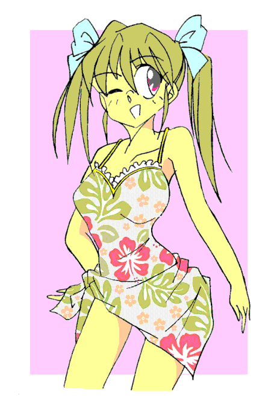

七月。
やっと体が暑さになじんできたものの、気温が上がりつづけついていけないところもある。
女子として初めての夏を迎える亜留葉もそうだった。
「彼女」の場合、その生涯において五月までつけたことなく、そして現在は必要不可欠な衣類が苦しめていた。
「……なんだって、女はこんなブラジャーなんて物をつけないといけないんだ？」
薄くて揺れなくても敏感な胸の保護のために必要なもの。まして亜留葉は体格から考えるとやや大きめ。つけないではいられない。
「密着して暑苦しいし、胸締めつけるし、汗疹できるし、こんなものいらない」
八つ当たり気味に叫ぶ。すでに着用し始めて二か月にはなるというのに。
「上半身裸で何が悪い……」
思考がめちゃめちゃである。
「おっじょうさまっ」
本来なら平太についているはずのメイド。江介伊舞が亜留葉のもとに来た。
「はい。いいものよ」
鎮痛剤だった。水もセットだ。
亜留葉はそれを緩慢な動作で口に流し込む。
飲み込むと下腹を抑えた。
「……本当に……女でいいことなんて一つもない！」
腹部の鈍痛が女の肉体であることをアピールしていた。
「お嬢様は重いほうよね」
「そ、そうなのか？」
「なぁに？ 子供のころからなんだから、みんなと比べたりしない？」
「い、いや……」
亜留葉は言葉を濁す。
当然ながら二か月前までは男だったのだ。そんな過去なとあるわけない。
もちろん「生理」もまだ二度目。
しかしそれこそ子供のころから「なれている」生まれついての女子と違い、亜留葉はいきなり大人の肉体でこの世に出現した。
なれるわけがない。
「まーでも。タイミングよかったわねー。これで海へ行くときに『真っ最中』なんてことにはならないで済むし」
「確かに こんなのに当たったらたまらんな…」
返答してから亜留葉は男だった時を思い出す。
（でも男は男で大変なんだよな。水着の女に下が反応しちゃって……私の破廉恥！）
自分自身をしかりつけるとはつらいことである。
「約束は午後だっけ？ そのころには薬が効いて楽になってるわよ」
「女同士」でフランクな口のきき方をするメイドだった。
「その約束もなぁ……」
翔子。撫子とともに新しい水着を買いに行くためのものだった。
とあるデパート。そこに亜留葉。翔子。撫子の女子三人だけできていた。
目的が水着選びである。
男子はむしろ居づらい。
「亜留葉さん？ 大丈夫ですか？」
「あたしもこの前終わったばかりだから、あんたのつらさわかるけど」
危うくこけるところだった亜留葉。
踏みとどまって、その勢いで二人に「なんでばれてんだよっ」と怒鳴る。
「そりゃあ…ねぇ、あんなつらそうな表情をずっとされていたら」
「ずっとお腹押さえてましたものね」
「え？ それじゃまさか」
「たぶんクラス中。最低でも女子はみんな気が付いてる」
「ほえええええええっ？」
亜留葉はとてつもなく恥ずかしくなった。
本来なら知りえない『恥じらい』に戸惑う。
それをフォローするかのように…ある意味では追い討ちで撫子が言う。
「大丈夫ですわ。女の子ならだれにでもあることですから」
そう。女の子にならである。
本来の「生出理人」なら一生知らないはずの「痛み」だった。
（私は本当に女なんだな…これだって子供を産む体である証拠みたいなものだし）
ならばいっそ完全に女の心になってしまえば楽だが、それは「自分」の消失につながりそうで踏み切れない。
いくつか選ぶが亜留葉はワンピースのものばかり。
それも当然。へその横には赤い石が埋まっている。
あの『願いをかなえる紫の石』…魔宝石（魔法石？）が理人を「亜留葉と平太」に分裂させ、紫の石も赤と青に分かれてそれぞれのへその横にボディピアスのように埋まっている。
これを見られたくないからワンピースだ。ご丁寧にバレオまで手にしている。
現在は翔子と撫子が試着中。
試着室の空きがなく、亜留葉が二人に先を譲ったのだ。
（だいたい血が出ているのに試着なんてできるわけが）
「自分は男」という思いの亜留葉からしたら、女子用水着など「女装」そのもの。
だから適当に見つくろうだけのつもりだった。
くいくい。
「ん？」
亜留葉が着用している、肩の大きく出た白いワンピースのスカート部分を、低い位置から何者かが引っ張る。
気が付いた亜留葉が目を向けると泣きそうな表情の童女だった。
一瞬で事情を察した亜留葉は、しゃがんで童女の目の高さに合わせる。
「どうしちゃったのかな？ おねえちゃんにお話ししてごらん」
優しく語りかけると童女は母とはぐれたことを告げた。想定の範囲内だ。
さみしさを思い出したのか童女はまた涙をこぼしかける。
それをそっと抱きしめる亜留葉。まるで母親のようだ。
「それじゃおねえちゃんと一緒に探しに行こうね」
そのまま子供を抱き上げる。高い位置に目線を持ってこさせ、母親を見つけやすくするためだ。
数分後、母親のほうも娘を探していたのですぐにわかった。
「ありがとうございます。ありがとうございます」
「いえいえ。大したことはしてませんから。ねー」
亜留葉は可愛らしい笑顔を童女に向ける。童女も笑い母親にたどたどしく語りかける。
「ママ。このお姉ちゃんとっても優しくて、ママみたいだった」
「まぁ。よかったわね。きっといいお嫁さんになるわ」
「お姫様みたいに？」
童女にしたらウエディングドレスは確かにお姫様の服だろう。
母と娘が立ち去るまで笑顔だった亜留葉だが、視界から消えたとたんにその場にうずくまった。
（ママみたいにお嫁さんって…私はどんだけ女らしいんだよ）
普通の女子なら悪い気はしないが、心は男の亜留葉にしたらあまり歓迎できない「褒め言葉」だった。
さらに自爆も。
順番になって試着する。
（サニタリーの上からだけど大丈夫かな？）
「女の子ならではの心配」を余儀なくされて、思わず苦笑。
とにかくとりあえず試着。
ワンピースの水着の上からバレオである。揃っていてどちらもトロピカルなデザインだ。
「へー」
鏡の中の自分の美少女ぷりにちょっと感心する。
「悪くないかも」
狭い試着室のその場でくるっとターン。ちょっと背中を逸らして女性的なポーズ。そして笑顔。とてもかわいい。

「亜留葉さん。どうですか」 夏休み突入直後に海水浴に。駅で待ち合わせ。
亜留葉と平太がついて全員集合だ。
女子は亜留葉。撫子。翔子。
翔子はアウターキャミとホットパンツでギャル風。惜しげもなく太ももをさらしている。
撫子は半そでのワンピース。スカートのすそは踝までと対称的。
亜留葉はフェミニンな格好は避けたかったが暑さに負けた。
肩の大きく出たワンピース。スカートの裾も膝までだ。
一方の男子。平太は半そでのワイシャツとスラックス。
佐田はタンクトップと膝までのズボンとワイルドに。
そして風田もなぜかいた。Ｔシャツとジーンズである。暑いのにマフラーはそのままだ。
（平太。なんで風田までいるんだ？）
敵同士のようなものだ。
（いいじゃない。呉越同舟。それに）
撫子がおっとりと風田に話しかけていた。ほんのりと頬が赤い。
そうかと思えば翔子も佐田の前ではいつもと様子が違う。
元気は元気だが何かぎこちない。
（ははーん）
「女の直感」で亜留葉は察した。
（なるほどね。しかし意外だな。お前が恋のキューピットを買って出るとは）
何しろこの平太。「草食系」の顔して立派な「肉食系」なのだ。
それがわざわざ他の男との間を取り持てば、意外に思われて当然。
（忘れたのかい？ 僕の一番は亜留葉。君だって）
そうだった。何しろ「彼女」として作られた肉体。
その中に元の「生出理人」の人格も分裂して存在するゆえに、この二人は「双子」ということになっている。
それがなければ「平太を愛するだけの完全な女」だった。
亜留葉のほうは「自分は男」という部分があるため拒絶しているが、平太にしたら一番モノにしたい相手なのだ。
最優先事項だった。
向かい合わせになるボックスタイプの座席。
二人が並んで座れる程度。
つまり男三人。女三人とはいかない。
自動的に姉弟が一緒に。
平太にしたら亜留葉が意中の相手。
亜留葉としたら平太を翔子や撫子のそばには置きたくないので監視。
また自身も「自分は男」という意識のため、「肉親以外」の男のそばでなんて座りたくなかった。
風田と佐田も隣は居心地が悪い。
そこで翔子が風田と座席を変わることを提案し、そのままになった。
結果として亜留葉と平太。翔子と佐田。撫子と風田と三組の男女となった。
車中でもテンションは変わらない。
特に元気のいい翔子は。
「佐田君はフルネームはなんていうの？」
「啓介。名乗らせてもらおう。佐田啓介」
妙に騎士道精神にあふれた名乗りだった。
「そうなんだ。初めて知ったよ」
どこかほのぼのとした空気を醸し出している。
通路またいだ「となり」の座席は風田と撫子だった。
「それでは今まで修行の旅を？」
「ああ。人の心は弱い。自由であろうとするなら、なおさら強さがいる。だから俺は旅に出た」
「まぁ。求道者なのですね」
どこかずれた者同士で波長が合っている。
そして双子。
こちらは佐田と翔子の前のシート。
佐田は事情を知るが翔子は違うので言葉を選んで会話する。
「わかってんだろうな」
亜留葉は低く声を作り半身に警告する。
「何を？」
すっとぼける平太。
「私の親友二人に手を出したらただではおかんぞ」
「恋愛は自由じゃないか」
一応正論である。根が正直者の亜留葉は言葉に詰まる。
「ま、亜留葉が僕のモノになってくれるなら、他の女なんていらないけど」
油断していると体を触ってくる。
「こ、こら。触るな。暑苦しい」
「なになに？ 姉と弟で禁断の関係なの？」
体育会系のはずの翔子が「文学的」な展開に食いつく。
「そんなんじゃない。佐田。にやにや笑ってないで助けろ」
「いや。なんか楽しいし」
（そうだった。こいつちょっとサドっ気があった）
軽く絶望する亜留葉。もっとひどいと体がひび割れて魔物が出てきそうなほどだ。
「みなさん。見てください」
珍しい撫子の大声。平太すら行為を中断してしまう。
しかし叫びの理由は全員が瞬時に理解した。
窓の外に銀色に輝く海原が広がっていたのだ。
「おお」
「素晴らしい」
「Ｚｉｐでほしい」
嫌でももテンションの上がる一同だった。
目的地は近い。
駅から送迎バスで宿へと向かう。
六人は立派な作りの建物を見上げてしまう。
ホテル・神ステーション。
「変なボタン押したら、海の中に棺桶を射出しそうな名前のホテルだよな」
相変わらず変な知識の佐田である。
「そんなわけないだろ。ここの前が海水浴場でホテルの部屋から直接水着姿で行けるんだ」
「いきましょ。ホテルの人が待っているよ」
荷物を運ぼうと六人が入ってくるのを待っているのだ。
生出家で予約したがチェックインの手続きは佐田がした。
部屋は二つ。当然だが男女で別れる。
「ああっ。そんなっ。『ＰＬＳ』第１０話じゃ男女で雑魚寝だったのにっ」と平太。
「『ＰａｎｉｃＰａｎｉｃ』じゃちゃんと別れてただろ」と亜留葉。
「そうそう。男子はそっち」
「亜留葉さんは私たちと同じ女子部屋で」
二人の女友達の言葉に（ああ。私は女子なんだなぁ）と軽くへこむ亜留葉であった。
しかし今度はへこんでられない。
「さ。着替えよっか」
「ええっ！？」
間抜けなことに自分も女子二名の前で着替えることを失念していたのだ。
どこかでやはり「自分は男」という意識がある。
それを言うなら『女の自覚がない』というべきか。
「ちょっ、いいっ。私もあっちで着替える」
「何言ってんのよ。男の子の部屋じゃない」
「亜留葉さんは女の子だからこちらですわ」
（城弾…冗談じゃない。へそのこれを見られたら）
亜留葉には赤。平太には青い『石』がまるで対になるようにへその横にある。
二人が重なり合うとその石も重なり合う位置だ。
そうでなくてもボディピアスにしか見えない。
生徒会役員共としては体裁が悪く、ひた隠しにしていた。
「相変わらず亜留葉は純情だなぁ」
「女の子同士だから平気ですのに」
撫子も翔子も『恥じらい』と解釈した。
それも間違いではない。確かに恥ずかしいのだ。
着替えの間。亜留葉は裸身をひた隠しにしていた。それを恥じらいと受け止められた。
「おっまたせー……ぶうっ」
スポーティな印象のビキニを身に着けた翔子が噴出した。
「どうかしたのか？」
そう問いただす風田の着用している男子用水着が問題なのだ。
布の面積の少ないいわゆるブーメランパンツ。
「目のやり場に困りますわ」
ピンクのセパレート。上はフリル。下はスカートタイプの水着姿の撫子が両手で顔を覆う。
「最低限のところは隠しているが？」
しれっと言い放つ風田。それに対していつものセリフ。「破廉恥！」と怒鳴りつける亜留葉。
トロピカルな花柄のワンピース。さらにバレオまで巻いている。
水着でもちょっとへその横が盛り上がるのでそれを隠すためだ。
それならパーカーという選択肢のほうが『男らしい』が、どうしても女らしいほうを選んでしまうのである。
「まぁ、ちょっと引くかもな」
太ももまであるパンツの佐田が言う。
「大丈夫。目の保養ならちゃんとできる」
平太は女子をガン見していた。
「とにかく行くぞ」
当の風田が先頭になり浜辺へと。
「よし。泳ぐぞ。誰か付き合うか」
「はいはーい。あたしがいく」
「いいだろう。だがついてこれるかな」
「男の子にだって負けないよ」
準備運動もそこそこに。佐田と翔子は沖を目指して泳ぎだしてしまった。
「まったく。それじゃ私たちは…」
撫子に声をかけようとしたらすでに海に入っていた。
風田に手を取られている。バタ足だ。
「そうだ。いい呼吸法だ。次は１０秒間息を吸い続け、そして１０秒間息を吐きづける」
（波紋でも練る気か？）
心中で突っ込むがこの「水泳教室」の雰囲気がいい。壊すのは野暮に思えてきた。
「仕方ない。それじゃ僕たちもあの岩陰で」
強引に亜留葉の腕をとる平太。
「な、何をするだぁーっ」
亜留葉によって吹っ飛ばされる平太であった。
「まったく。平太は全く」
ぶつぶつぼやきながらあてもなく歩き出す亜留葉。
「あー。ここはいつもいい風が吹くなぁ」
ちなみにはじめてきた土地だ。
風と太陽の心地よさが錯覚させたらしい。
「全身で日の光を受け止めたいが…今の私がそれをしたら監視員に怒鳴りつけられるだろうな」
ここは海外にあるヌーディストビーチではない。
幼女でもない限り女子が胸をさらすと咎められる。
（はぁ。早く男に戻りたい）
小さな肩を落とす。それを抱きとめるものがいた。
「かーのじょ」
亜留葉は瞬間的に血が頭に上った。
「平太！ お前は性懲りもなく」
肩を振りほどこうとするができない。小柄な平太ではない。
「つれないなぁ。一人なら相手してくれてもいいだろ」
似ても似つかない男だった。サーファーとでも自称しそうな日焼け顔。ブリーチした金髪。左耳のピアス。
（くっ。ナンパというやつか…ナンパ。ああああ。私も男の時にしたことがある。なんて破廉恥なことを）
過去の失態を思い出して赤面する。落ち込んで下がったので戒めから解かれた。
「おっと。逃がさないよ。付き合ってくれよ」
ナンパ男は執拗に迫るが、それを阻んだのは平太だ。
「なんだてめぇ？」
ナンパ男は牙をむく。
「通りすがりの弟だ。覚えとけ」と切り返す平太。そのまま亜留葉を叱咤する。
「ウサギを追うな！ ドライブが乱れる」
ウサギというのは過去の記憶のことらしい。
「平太…」
「こういうやつには正当防衛も適用されるだろ。呼吸を合わせるぞ」
半身が右手を振り上げた。
「よ、よし」
亜留葉も同じ手を振り上げて叫ぶ。
「エルボーロケットぉ」
「ロケットパァンチぃ」
拳が同時に炸裂して、ナンパ男は悶絶した。
その隙に逃げ出した。そして落ち着いたところでけんかを始める姉弟。
「叫ぶならエルボーロケットだろ。そうでないと私が生きない」
「日本人ならやはりロケットパンチに変えた方が」
そこかい。
元のところに戻ると佐田と翔子も戻ってきていた。
「お。生出姉弟も戻ってきたな。それじゃボール遊びでもすっか？」
佐田が言う横で風田がビーチボールを膨らませていた。
「ああ。いいね。平太もいいだろ」
「うん。それはいいが…吸血鬼がこんな天気でボール遊びをしていたアニメのオープニングがあったなと。しかもキャラクターにそぐわない笑顔で」
「ファン向けの本でけんかを売るようなネガティブ発言するような監督じゃそんなもんだろ」
ボールとたわむれ始めた。
その後は「浜茶屋。海が好き」で焼きそばを食べたり、日光浴したり、今度は浅瀬でみんなで泳いだりと夕方まで海水浴を楽しんだ。
ホテルに戻り一服する。そして温泉へと出向くことになった。
「わ、私はいい」
「なに言ってんの？ 亜留葉。塩水を洗い流さないと。髪だって大変なことになるよ」
「それなら私は部屋の風呂で洗うから」
「でも、せっかくですから温泉のほうに参りません？」
「い、いや。それだと裸の女性ばかりだろう」
「……女湯だから当然じゃん？」
「だから恥ずかしがることはありませんよ」
翔子と撫子は誘い続ける。
亜留葉が嫌がるのは、見ず知らずの他者に肌をさらすのを嫌がっていると解釈していた。
それもある。しかしそれ以上に裸の自分…どうしようもなく女の姿を突き付ける存在。女と認識されたくなかった。
見られたくないのも本当。理由は言うまでもなくへそにある赤い石。
ボディピアスと見做されてでも嫌だった。
そして、裸の女性が多数いる場所に気後れしているのも確かだった。
「もう。弟君なんか誘わなくても、あたしらのほうにきそうだけど」
翔子のその発言が亜留葉を動かした。いきなり立ち上がる。
「亜留葉？」「亜留葉さん？」
「気が変わった。私も行くぞ」
その返答に喜ぶ二人。
「よかったぁ。せっかくですものね」
「みんなで仲良く」
三人は和気あいあいと大浴場へと向かう。
亜留葉は（この二人や他の女性客を平太から守らないと）と使命感に突き動かされて大浴場へと向かっていた。
大浴場というだけあり広々とした作りであった。
よくあるケースだが日替わりで男湯と女湯が入れ替わる。
勇ましかった亜留葉だが脱衣所でいきなり弱腰に。
やはり人前で裸になる…ましてやこのへそをさらすのは抵抗があった。
だから小さな動きでなるべく肌を隠しつつ脱いでいく。
皮肉にもそれがつつましやかな女性を演出していることも気が付かず。
女湯でもリラックスできない。
体を洗いつつも常にへそをタオルで隠している。
その緊張もある。それ以上に
（平太め…来るならこい）
こんな好機を逃すはずのない「双子の弟」に対して警戒していた。
血を分けたどころか、肉体そのものを分けた半身を信じられないというのはつらい。
いや。だからこそ手に取るようにわかる。絶対にやってくる。
なんとしても二人の友人だけでも守りたい。そう思っていた。
君だけを守りたいと思いＵｌｔｒａ Ｈｉｇｈになっていた。しかし
「離せ。こんな地獄にいられるか。何が悲しくて男の裸を見ないといけないんだ」
平太が隣の男湯で騒いでいる。
「おとなしくしろ。ひと迷惑だ」
「仮にも学園警察のメンバーがのぞきなんぞしたら恥だぞ」
風田と佐田の声がする。
どうやら佐田と風田が平太を監視しつつの入浴してくれているらしい。
「佐田。お前だけが頼りだ。そのアホを絶対に逃さないでくれよ」
壁越しに同胞に頼む。即座に返事が返ってきた。
「任せてくれ。俺がお前の最後の希望だ」
その言葉を聞いて安堵の息をつく。緊張がほぐれてついうっかりタオルを下げてしまった。
「亜留葉。それ？」
「ボディピアスですの？」
緩んだ緊張が戻った。
よりによってこの二人に見られた。
（あああ。どうしよう）
「びっくりしたぁ。あんたみたいなお嬢様でもするんだ。そういうの」
「耳だとどうしても目立ちますものね」
「え？ 二人とも…これ見ても」
涙目の亜留葉は拍子抜けした。
「そうですね。女の子ですもの。おしゃれしたいと思って当然ですわ」
「よっし。それじゃそのうち亜留葉の服を買いに行こうよ。キャミとホットパンツかマイクロミニで。へそ出しにしてそのピアス見せつけてやろうぜ」
「お、おまえらなぁ」
「ああ。ホットパンツといっても『肉スプレー』じゃないから」
「なんだよ。それ」
いつのまにかすっかりリラックスしていた亜留葉であった。
ちなみに佐田はもちろん、風田も二人が分裂したのを理解しているのでパラージの…ではなく、平太の青い石にも無反応なのである。
湯上り。そして隠し事が一つ減った亜留葉はリラックスしていた。
そのせいかやたらお腹がすく。
夕食はバイキングだ。
バイキングのできるブッフェにつく。
「オレンジ…」
「えっ？」
亜留葉のつぶやきに撫子と翔子が反応しきれない。
「オレンジ・ロックオン」
言うなり亜留葉はトレイをもって、いきなりデザートのコーナーで大量にオレンジをせしめてきた。
ほかにも大量に南国のフルーツを持ってきた。
このあたりも『女の子ならでは』という「設定」か？
仕方ないので残りはまずテーブル確保。
そして留守番残してから取りに。
「お待たせー」
ニコニコ笑顔でテーブルに。
「あんたメインの食事の前にデザートって…撫子もなんか言ってやりなよ」
呆れた翔子が撫子にふるが
「はい？」
こちらはすでにケーキを食べていた。
「あんたもかよ」
大仰に天を仰ぐ翔子。そのおかげで背後から胸を揉もうとしていた平太に気が付いた。
瞬間的に亜留葉の持ってきた中にあった、丸ごとのパイナップルを平太の脳天からたたきつけた。
「粉砕デストロイ！」
「ぎにゃああああっ」
哀れ平太はその場でＫＯされた。
「さっ。アホはほっといて食べよう」
「双子の弟」に対して冷淡な亜留葉であった。
一転して嬉しそうに果物を食べていく。
「美味しいーっ。このアンデスメロンも最高。やっぱりアンデス山脈産？」
「いいえ。亜留葉さん。アンデスメロンは、アンデス原産じゃないです」
「フレンチトーストがフランス料理じゃないようなもの？」
「だね」
女三人そろうとかしましい。
しっかり女子グループの亜留葉である。
食後。平太が「肝試しと花火。どっちかしない？」と提案してきた。
「おー。いいね。どっちも夏ならではだし」
翔子は乗り気だ。
（肝試し……）
亜留葉は心中でその言葉をおうむ返しにする。
（はっ！）
そして「恐ろしい」考えに至った。
（まさか平太。これで私を陥落させる気じゃ？）
盛り上がる面々をよそに妄想世界に突入する亜留葉。
（知っているぞ。私は。世の中には「吊り橋効果」というものがあると。恐怖によるドキドキを、恋と誤認するというもの。それを利用して彼女を作ろうとする破廉恥な男も多いと）
「はぁ！？」
現実では撫子の天然発言に翔子が突っ込みを入れていたが、図らずも亜留葉の心中に突っ込みを入れたようなタイミングだった。
（姉萌えの変態野郎の平太のことだ。これを利用して私を落とす気だ。おのれ平太。孔明並みの策士よ。そうはいくか。怖くない。暗がりなんか怖くない）
「なぁ。亜留葉はどっちにする？ 肝試しと花火。キャスティングボードを握らせて悪いけど」
「…怖くない…」
「は？」
「お前なんか全然怖くなかったぞ。ばぁーか」
「東方定助…じゃなくて仗助！？」
結局、花火を楽しんだ一同であった。
夜。
ピンク色の浴衣に身を包む亜留葉たち。
女性用の「寝間着」だ。
（まさか女子と一緒に寝るのが「恋人」としてではなく「同性」としてとは夢にも思わなかった…）
ため息の亜留葉。
「どうしたんですの？ ため息なんてついて」
撫子がブラジャーとショーツだけの姿で尋ねてきた。
「あんたも色々疲れているみたいだけどね」
翔子に至ってはトップレスだ。
「な…なんて破廉恥な姿」
赤くなる亜留葉。このあたりがわずかに残った「男」の部分。
「そうですわね。ちょっとはしたないかも。でも」
「あたしらだけじゃん。気の置けない仲間同士。それに寝るんだからブラ外さなきゃ」
「そ、それもそうだな」
亜留葉も一度浴衣を脱ぎ、下着をはずしてから着なおした。
確かに楽になった。
「さぁ。もう寝ようか」
亜留葉は本気で疲れ果てていた。だが
「あら。せっかくの夜ですよ」
「今夜は寝かせないぜ。なんちゃって」
意外な言葉が返ってきた。
「だって海で遊んで疲れてるんじゃ？」
「エネルギー補給ならじゃーん」
翔子が大量のお菓子をぶちまける。
「おお」
甘いものが大好きな亜留葉。目を輝かせる。
「食べていいの？」
「どうぞ」
「ありがとう。では早速」
いきなり飴玉だ。それを舌の上で転がす。
「レロレロレロレロレロレロレロレロ」
「まぁ。お行儀悪いですわよ。亜留葉さん」
「うっ。これは失礼」
普通になめ始めた。
少女たちは布団の上に座り、お菓子を食べながら「ガールズトーク」に興じ始めた。
「それでそれで。撫子。風田君とはどうだったの？」
興味津々で尋ねる翔子。
「そ、それは」
赤くなって口ごもる撫子。何かあったのかもしれないと思った亜留葉。
「わたくしのことより、翔子さんは佐田君とどうでしたの？」
「質問を質問で返すなぁーっ」
なぜか切れる翔子。
「ご、ごめんなさい」
撫子の怯えで正気に戻る。
「あ。いや。悪かったよ。怒鳴ったりして。それじゃ間とって……亜留葉はどうなの？」
「わ、私！？」
いきなり振られて戸惑う亜留葉。
たぶん自分でもなく撫子でもないという理由で、翔子は振っただけなのだろう。
「そんなことを言われても」
しかし反射的に『男子』の顔が頭に浮かぶ。それは双子の弟だった。
（ひっ！？）
ぶんぶんと頭を振ってその考えを消そうとする亜留葉を、怪訝な表情で見ている撫子と翔子。
（なんであいつの顔が…もともとこの肉体は「彼女」として作られたものだからか？）
「亜留葉？」
「亜留葉さん？」
赤面している亜留葉の顔を覗き込む二人。
「な、なんでもない。ジュースもらうぞ」
「あ。それは」
翔子の言葉に耳を貸さず。亜留葉はカラフルな缶を開けると、オレンジの味がする飲料を流し込んだ。
「あーあ。飲んじゃった。スクリュードライバー」
「すくるーどらーばー？」
すでに呂律のまわってない亜留葉。
「それっておさけれりょ？ なんれこーこーせーが」
「そうですわ。翔子さん。高校生の飲酒はいけませんよ」
「硬いこと言わない。本音トークにいいかなと思ったんだけど、一気はよくないなぁ」
「ああ。れかいがまわる」
酔いに任せて眠ればよかったのだが、なまじ正気を保とうと言葉を紡いだから拙かった。
「なんれもない。なんれもない。あたしはしょーき」
酔いと眠気で「男」を維持できない。
とうとう自己代名詞が女性のそれになる。
「おっ。珍しく亜留葉が女言葉になったな」
翔子に言われる。
「おんながおんなことばでなにがわるいー。きゃはははは」
たちの悪いよっ払いだった。
「そうですわ。今なら」
撫子が自分のバッグをまさぐる。そしてメイクセットを持ってきた。
「あんたも高校生なのに化粧品持ってきてるじゃないか」
「うふ。こんなチャンスがあるかなと思って。亜留葉さんお人形さんみたいだから、一度やってみたかったんですの」
それでも一応同意を得る。
「亜留葉さん。きれいになってみたくありません？」
「おけしょーしてくれるの？ はいはい。やってやって。あたしをかわいくしてちょーらい。それでおとこをてだまにとってやるのらー」
大トラだった。
「任せてください。ビーチで殿方が振り返るようにして差し上げますわ」
結局、翔子も交えて悪乗りしてメイクを施す。
メイクしながらガールズトーク。
メイク。ファッション。男性アイドル。
いずれも亜留葉は「女の子らしい」回答だった。
メイク中、当の亜留葉はなすがまま。
だが完成して鏡を見て喜んでいたので、それで一同満足して就寝した。そのままで。
翌朝。
「おっ。生出。朝から気合入っているな」
「見違えたぞ」
朋友・佐田と宿敵・風田に言われる。
「まるで女優かアイドルだよ。姉さん」
半身に言われ口をとがらせる亜留葉。
その唇は真っ赤に彩られ、ほほもピンクに染まっている。
まつ毛にはつけまつげ。
ファンデーションは首筋との境目が分からない見事な塗り方だった。
「撫子。これ洗っても取れないぞ？」
起床して洗顔時に驚いた。
ざぶざぶ水で洗っても落ちなかった。
仕方なくこのまま朝食に来たのだ。
「ええ。ウォータープルーフといって、水をはじくのですよ。もちろん海水でも大丈夫」
「まさかこの顔で？」
「せっかくだからうちに帰るまでそのままでいろよ。可愛いぞ。亜留葉」
「え？ 可愛い？ ホント？」
可愛いといわれて『女として』反射的に喜んでしまった。
そしてまた落ち込む。
そして帰る前にもうひと泳ぎで浜辺に出た。
ばれたならと友人たちの勧めでビキニの水着を着て出たら、
「うぉっ。可愛い」
「どこかのアイドルか？」
「君。ハーフ？」
大勢の男たちに囲まれた。
「いや…あの…」
勝気な亜留葉もたじろぐ。
そもそも「心は男」だから男に迫られても嬉しくない。だから
「ご、ごめんなさーいっ」
脱兎のごとく逃げ出した。
「あっ。待ってくれ」
「俺と付き合え」
「いや。俺とだ」
「嫌だぁーっ」
その美貌で男たちに追われて海水浴を楽しむ余裕のなくなった亜留葉であった。
（や、やっぱり、女でいいことなんて何もない。可愛いと言われても、きれいといわれても、悪い気はしないし男にちやほやされるのも悪くないけど、それでも私は男に戻りたい―）
男たちから逃げながら亜留葉はかなわぬ思いを巡らせていた。
ビーチサイドが狂想曲を奏でていた。
第４話「Ｗの喜劇／ヒロインは金髪ツインテール」に続く
あとがき
三話目。水着話をお送りします。
着々と女子クラスタに取り込まれる亜留葉。
修学旅行とかではなく女だけで一夜を明かさせて、ますます女性化が進むという展開です。
なりっ放しですので「女の子の日」は回避せずに冒頭で。
そんなときに水着を買いに行くかは疑問ですが（笑）
お読みいただきまして、ありがとうございました。
おまけ・パロディ原典集
サブタイトル…今回は「仮面ライダーキバ」風に前半に音楽にちなんだ言葉を。
「上半身裸で何が悪い……」…とある国民的男性アイドルグループの一員が、泥酔して全裸になった際それをとがめた警官に向けて言い放った言葉「裸で何が悪い」から。
「ほえええええええっ？」…「カードキャプターさくら」主人公の木之元桜が驚いたりしたときの叫び声から。
魔宝石（魔法石？）…「仮面ライダーウィザード」で魔力を引き出すためのアイテムがこれ。ただし表記がはっきりしていない。
最優先事項だった。…「最優先事項」は「おねがいティーチャー」主人公。風見みずほの口癖。
「啓介。名乗らせてもらおう。佐田啓介」
妙に騎士道精神にあふれた名乗りだった。…「ジョジョの奇妙な冒険・第三部」に出てくるジャン・ピエール・ポルナレフのセリフから
軽く絶望する亜留葉。もっとひどいと体がひび割れて魔物が出てきそうなほどだ。…「仮面ライダーウィザード」の「ゲート」と呼ばれる人間が絶望すると「ファントム」と呼ばれる怪人が現世に出現する。
「Ｚｉｐでほしい」…ライトノベル「俺の彼女と幼なじみが修羅場すぎる」の登場人物。秋篠姫香が初めて海を見たときに漏らした感想。
神ステーション。…「仮面ライダーＸ」に出てきた基地の名前。
布の面積の少ないいわゆるブーメランパンツ。…コミック版のイナズマンにおけるヒーローのデザインがそれに近い。
次は１０秒間息を吸い続け、そして１０秒間息を吐きづける…「ジョジョ」第二部でジョセフとシーザーが課せられた修行の一環。
「な、何をするだぁーっ」…「ジョジョ」第一部。その一話でディオ・ブランド―が主人公。ジョナサン・ジョースターの愛犬ダニーを足蹴にした時のジョナサンのセリフ。「何をするんだ」の誤植だが原作者。荒木飛呂彦先生の「一度出した設定は変えない」という主義のもと長年修正されていなかった。
「まったく。平太は全く」…「ハヤテのごとく」での三千院ナギのセリフ『まったく。ハヤテは全く』から。ちなみにこちらも小柄（１３８センチ）で金髪ツインテール。
「あー。ここはいつもいい風が吹くなぁ」…「仮面ライダーＷ」ナスカドーパントこと尻彦……ではなく園咲霧彦の最後のセリフから。
「通りすがりの弟だ。覚えとけ」…「仮面ライダーディケイド」の決め台詞「通りすがりの仮面ライダーだ。覚えとけ」より。
「ウサギを追うな！ ドライブが乱れる」…ワーナーブラザーズ映画配給。ギルレモ・デル・トロ監督の「パシフィック・リム」のセリフより。
「エルボーロケットぉ」
「ロケットパァンチぃ」…同じく「パシフィック・リム」から。「エルボー」はもともとのセリフ。「ロケット」は日本語吹き替え版での差し替え。ちなみに某大陸ではなぜか「ペガサス流星拳」にしてしまう、配給元から抗議を受けたとか。
「叫ぶならエルボーロケットだろ。そうでないと私が生きない」
「日本人ならやはりロケットパンチに変えた方が」…同じく「パシフィック・リム」から。前者はテレビＣＭの際にそのディレクターの主張。後者はスポンサー筋の主張で食い違いが出た。
「吸血鬼がこんな天気でボール遊びを〜ネガティブ発言するような監督じゃそんなもんだろ」…アニメ版『魔法先生ネギま』（一期目）での話。とにかく映像化に恵まれない作品である。
「浜茶屋。海が好き」…「うる星やつら」に出た浜茶屋のこと。
君だけを守りたいと思いＵｌｔｒａ Ｈｉｇｈになっていた。…「ウルトラマンダイナ」のＥＤテーマ。前期が「君だけを守りたい」で後期が「Ｕｌｔｒａ Ｈｉｇｈ」
「任せてくれ。俺がお前の最後の希望だ」…「俺がお前の最後の希望」は「仮面ライダーウィザード」の主人公。相馬晴人の決め台詞。
「ああ。ホットパンツといっても『肉スプレー』じゃないから」…ホットパンツはこの場合「ジョジョの奇妙な冒険第七部 スティール・ボール・ラン」の登場人物。『肉スプレー』は正式には「クリームスターター」という名のスタンド能力。
パラージの…「ウルトラマン」の１エピソード。「パラージの青い石」より。
「オレンジ・ロックオン」…「仮面ライダー鎧武（がいむ）」で変身時にかかる声。本当に巨大なオレンジが主人公の頭部をロックオンして降下、鎧へと転じ戦士へと変化させる。
「粉砕デストロイ！」…主人公・鎧武のバリエーションの一つ。パイナップル・アームズの時の音声。
「いいえ。亜留葉さん。アンデスメロンは、アンデス原産じゃないです」…ＭＯＮＤＯさんの「アンデスメロンは、アンデス原産じゃない」から。
食後。平太が〜結局、花火を楽しんだ一同であった。…この展開は少年サンデー連載中の田口ケンジ先生の『姉ログ〜靄子姉さんの止まらないモノローグ〜』のパターン。幼少時に弟が発した「お姉ちゃんと結婚する」の言葉をある意味真に受け、何かと妄想してしまう残念女子高生・近衛靄子の話。ちなみにそれ以外は見た目も性格も成績も申し分ない。
キャスティングボード…「決定権」という意味だが、この場合は「さよなら絶望先生」第百三十九話『決定無罪』からとられている。
「お前なんか全然怖くなかったぞ。ばぁーか」…ジョジョ四部でラスボス。吉良の父親の幽霊の罠にかかったが、冷静にそれを打ち破った空条承太郎に言われて四部主人公。東方仗助が父親の幽霊に向けて言い放った言葉から。
「東方定助…じゃなくて仗助！？」…前半の方はジョジョ第八部「ジョジョリオン」主人公の名前。四部主人公の東方仗助と発音は同じであるが、舞台も同じ架空の町。
「レロレロレロレロレロレロレロレロ」…ジョジョ三部にて。主人公の承太郎の仲間の一人。花京院に成りすましていた「イエローテンパランス」のスタンド使い。ラバーソウルが舌でさくらんぼを転がした時の音。ちなみに本物の花京院も同じことをしていた。
「質問を質問で返すなぁーっ」…ジョジョ四部でラスボス。吉良吉影が別人に成りすましていた時に通り魔的に襲った女性の反応に激怒して放ったセリフから。
□ 感想はこちらに □